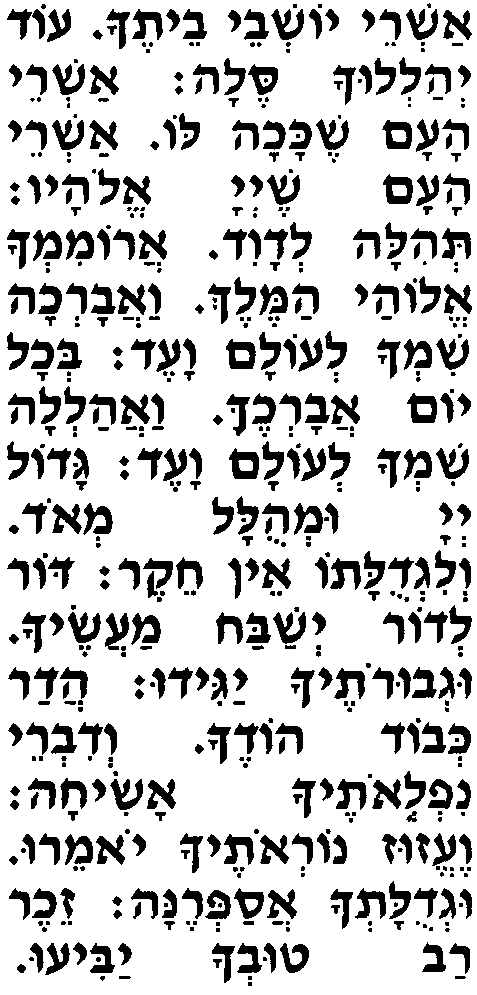
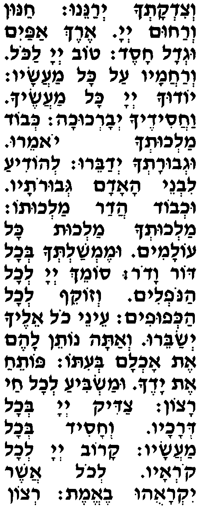
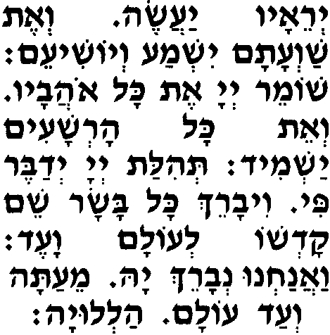

Ашрэй йошевэй вэтэха од йеалелуха сэла,
Счастливы находящиеся в Твоем Храме, они постоянно будут Тебя восхвалять.
ашрэй аам шэкаха ло,
Счастлив народ, которому ниспослано такое,
ашрэй аам шэ-А-донай Элоав.
счастлив народ, для которого Г-сподь - его Б-г.
Теила ле-Да-вид,
Хвалебная песнь Давида.
аромимха Элоай аМэлэх ваавареха шимха леолам ваэд,
Буду Тебя превозносить, мой Б-г, Царь, и благословлять Твое Имя во веки веков.
бехоль йом аварехэка вааалела шимха леолам ваэд.
Каждый день буду Тебя благословлять и восхвалять Твое имя во веки веков.
Гадоль А-донай умеулаль меод ве-лигдулато эн хэкэр,
Велик Г-сподь и велика Его слава, и величие Его - непостижимо.
дор ледор йешабах маасэха угвуротэха ягиду,
От поколения к поколению будет умножаться хвала Твоих деяний и будут возвещать о Твоем могуществе.
адар кевод одэха ведиврэй нифлеотэха асиха,
Я расскажу о Твоем великолепии и славе Твоего величия, о Твоих чудесных деяниях.
вээзуз нореотэха йомэру угдулатеха асаперэна,
Они будут говорить о Твоей грозной мощи, а я поведаю о Твоем величии.
зэхэр рав тувеха ябиу вецидкатеха иеранэну,
Вспомнят о Твоей великой милости и воспоют Твою справедливость.
ханун верахум А-донай эрэх апайим угдоль хасэд.
Г-сподь благосклонен и милосерден, весьма терпелив и велик в благодеяниях.
Тов А-донай лаколь верахамав аль коль маасав,
Г-сподь добр к каждому, проявляя милосердие ко всем Своим созданиям.
йодуха А-донай коль маасэха вахасидэха йеварехуха,
Будут благодарить Тебя, Г-сподь, все Твои создания, и любящие Тебя будут Тебя благословлять.
кевод малхутеха йомэру угвуратеха йедабэру,
Они расскажут о славе Твоего царствования и поведают о Твоем могуществе,
леодиа ливнэй аадам гевуротав ухвод адар малхуто,
чтобы стало известно людям о могуществе и славе великолепия Твоего царствования.
малхутеха малхут коль оламим умэмшалтеха бехоль дор вадор,
Твое царствование - на веки вечные, и Твое владычество - над всеми поколениями.
сомэх А-донай лехоль анофелим везокэф лехоль акефуфим,
Г-сподь поддерживает всех падающих и распрямляет всех согбенных.
энэй холь элэха йесабэру ве-Ата нотэн лаэм эт охлам беито.
Глаза каждого устремлены к Тебе в надежде, и Ты всем даешь пищу вовремя.
Потэах эт ядэха умасбиа лехоль хай рацон.
Раскрываешь Свою ладонь и насыщаешь все живое с щедростью.
Цадик А-донай бехоль дерахав веха-сид бехоль маасав.
Г-сподь справедлив во всём, что вершит, и милостив во всех Своих деяниях.
каров А-донай лехоль ко-реав лехоль ашэр йикра-уу вээмэт,
Г-сподь благоволит к каждому, кто взывает к Нему, ко всем, кто искренне Ему молится.
рецон йерэав яасэ веэт шаватам йиш-ма вейошиэм,
Он исполнит желание тех, кто Его боится, услышит их мольбы и спасет.
шомэр А-донай эт коль оавав веэт коль арешаим яш-мид.
Г-сподь оберегает всех любящих Его, а всех злодеев уничтожит.
Теилат А-донай йе-дабэр пи виварэх коль басар шэм кодшо леолам ваэд,
Хвалу Г-споду произнесут мои уста, и все живое будет благословлять Его святое Имя во веки веков.
ваанахну неварэх Я мэата веад олам алелуя.
И мы будем благословлять Г-спода отныне и во все времена. Восхвалите Г-спода.
|

 |